约 2519 个字 27 张图片 预计阅读时间 13 分钟
Chap 4 | 低功耗短距离通信协议
章节启示录
本章节是物联网基础的第四章。复习的时候应该会标注哪些是非重点。
1.概述¶
典型协议¶
- ZigBee技术:具有低功耗、低速率、低成本、组网灵活等优点
-
传感网协议:由大量低功耗节点组成的无线自组织多跳网络，实时感知、处理和传输网络覆盖区域内监测对象的信息
- 传感网协议是传感网应用的基础，自2002年以来大量研究围绕低功耗与组网技术展开
-
BLE:
随着功能的逐步增加，在2017年7月18日，蓝牙 SIG 正式发布了蓝牙多跳的功能定义和多跳模型定义，并增加到了蓝牙5.0中。在家居物联网中，蓝牙多跳标准的确定使得多设备和多设备之间的通信成为可能 -
RFID：射频识别, 无线电的信号是通过调成无线电频率的电磁场，把数据从附着在物品上的标签上传送出去，以自动辨识与追踪该物品。
-
NFC:是一种短距高频的无线电技术，在13.56 MHz频率运行于20厘米距离内，由RFID演变而来。
-
THREAD:
THREAD网络中的节点可分为两种角色：路由节点（router）和端节点（end device）
2.关键特性¶
2.1 功耗¶
D(dBm)与P(mW)换算 D= 10lgP
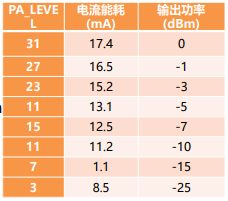
嵌入式设备的功耗很大部分来源于通信功耗
例如，对于TelosB节点，CC2420能耗占其总能耗的81%
-
降低无线收发器占空比:
- 无线收发器占空比=活跃时间/总运行时间
示例：设备活跃时的能耗为10𝐦𝐦𝑾𝑾, 休眠时的能耗为10𝝁𝝁𝑾𝑾,若占空比为0.1%, 则平均功耗为19.99𝝁W
2.2 通信距离¶
-
常用的路径损耗模型：
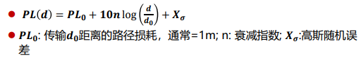n大概在2-3之间
-
最远通信距离（节点接收信号强度等于接收器灵敏度）: 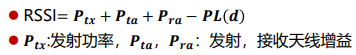
例子:不考虑天线增益与随机误差，假设发射功率为0dBm，接收灵敏度-85 dBm, PL0为28.5dBm, 衰减指数3：最远通信距离为76.4m
- 多跳网络：获得更大的通信距离
2.3 频带和数据率¶
-
授权频段与ISM频段
- 授权频段:使用授权频段需要许可证, 例如AM,FM广播频段
- ISM频段(Industrial Scientific Medical Band),主要开放给工业，科学和医学机构使用，无需许可证或费用
-
不同协议频带与数据率:
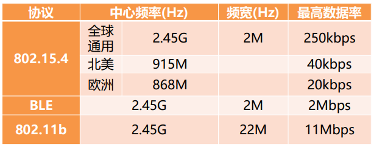 -
实际数据率与最大数据率:
-
最大数据率:实际中通常不能最高数据率
- 802.15.4 物理层最大数据率是250kbps
- BLE 最大数据率为2Mbps 802.15.4 数据包发送前会主动退避一段时间\((initial_{backoff} ∈ [𝟎, 𝑪W_{init})\) \(CW_{init} ≈ 10ms\) ，实际数据率一般为最大数据率的1/3,
-
实际传输效率为： 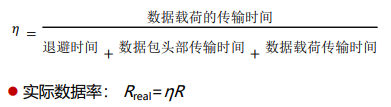
-
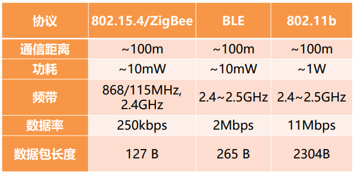
3.基于IEEE802.15.4的传感网协议¶
传感网协议的典型使用场景: 自组织无线多跳网络
传感网应用场景
1. Great Duck Island，生态环境监测
2. Volcano monitoring，火山监测
3. 绿野千传，森林火灾监测
- 传感器协议架构：
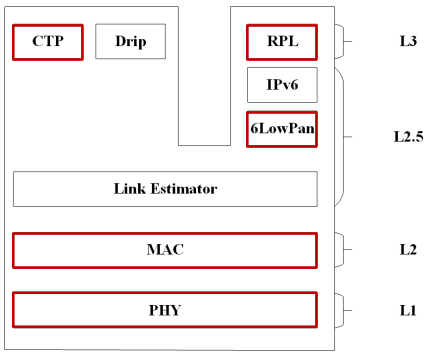
3.1 IEEE 802.15.4技术物理层¶
物理层功能：从比特流到RF信号
- 工作流程
- DSSS扩频
- O-QPSK调制
- 脉冲成形
- 数模转换及信号发送
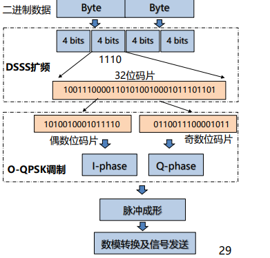
简单来说，I是cos，Q是sin。把一个数据拆成I路和Q路，间接地实现了调相，因为随着cos和sin的改变，合成的向量振幅不变，但相位改变。
-
DSSS 扩频：
- 每4bit数据转化为32位码片(chips)
- Chip rate：2M chip/s， data rate: 250kb/s
如果不改变，左侧的数据若是错了任意一个bit，则会转换成另一个正确合法的数据，这不是我们希望看到的。 而改变之后，由于数据间的海明距离很大，因此不容易把一个数据错误变成另一个数据，提高了抗干扰能力。
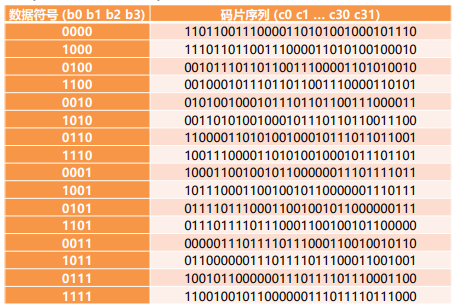
-
O-QPSK调制:
- 将32位码元序列调制到信号的I和Q相位上
- 每个相位的chip rate = C/2 = 1M chip/s
- 每个码元的发送时间：1s/(1Mchip/s )= 1us
- O表示offset，表示相位偏移，offset=0.5 us
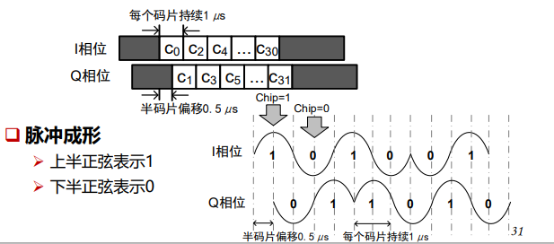
- 将32位码元序列调制到信号的I和Q相位上
-
帧结构（只需要知道各个名称的含义即可）
- 物理层数据单元(PPDU)=物理层头部+MAC层数据单元(MPDU)
- 物理层头部
- SHR (4B) – 用于实现码元和位同步
- SFD (1B) –帧定界符，固定的特殊值，用于标志SHR的结束和实际数据报文的开始
- PSDU(0~127B): 实际数据报文，从MAC层传过来的数据单元
- PHR (1B) – PSDU的长度
- MAC层数据单元(MPDU)
- MHR: MAC头部
- Preamble Control (2B) – 帧控制字段
- Data Seq. No. (1B)-序列号字段
- Address Information (4~20B) –地址信息字段
- MSDU: MAC载荷, 长度可变
- MFR(2B) – PSDU的长度
3.2 低功耗MAC¶
-
无线通信中造成能源浪费的原因
- 空闲侦听：能源浪费的主要来源
- 冲突：可能会造成接收方无法解码所涉及的任何数据包
- 偷听：传感器节点接收不是发给自己的数据包
- 控制开销：包头和其他类型的数据包开销
-
无线传感器网络中，降低功耗：使节点实现低占空比
- 通过让节点在活动状态和睡眠状态之间交替来实现的
- 问题：需要在发送节点和接收节点之间找到同处于活动状态的“汇合点”
- 解决
- 基于同步机制的MAC
- 节点协同活动和睡眠状态以便对齐其活动时间
- 会带来额外的同步开销
- 基于异步机制的MAC
- 发送方发起MAC（Sender-initiated MAC）
基本技术：前导码采样 - 接收方发起MAC（Receiver-initiated MAC）
持续监听信道，等待接收方发送信标
- 发送方发起MAC（Sender-initiated MAC）
- 基于同步机制的MAC
同步MAC：S-MAC¶
因为需要同步，所以会有额外的开销
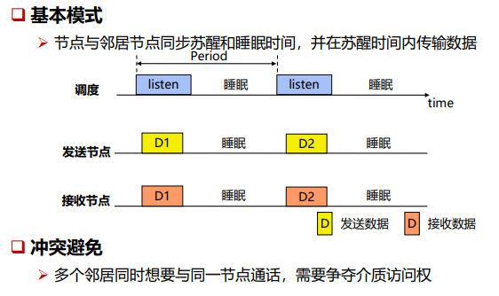
- 冲突避免机制（用来解决竞争问题）
- 虚拟载波侦听（猜一下别人会听多久，不需要记住具体细节）
- 物理载波侦听
- RTS/CTS机制（会产生额外开销）
RTS是清场信号，收到RTS之后别发消息，request to send
CTS也是清场，clear to send- 隐藏/暴露终端问题
- 减少空闲侦听
发送方发起异步MAC：LPL MAC¶
Receiver 睡觉，醒来时查看并接收。
CCA：简单地看一下有没有人在发包，不关注包的内容，功耗更低。
CS发现则退避
CCA发现则进入唤醒
* 阈值设置(默认-77dBm)
1. 偏高
1. CS可能无法感知潜在的传输，引起冲突
2. CCA可能无法检测潜在的传输，错过接收
2. 偏小
1. CS：环境噪音也可能引起不必要的退避
2. CCA: 环境噪音也可能唤醒节点
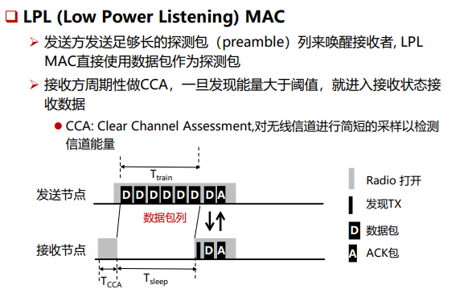
单播vs.广播
- 单播(UNICAST)：ACK包可以缩短数据包列
- 广播(BROADCAST)：发送的数据包列持续时间必须大于等于接收者的睡眠时间（Ttrain>=Tsleep）
在这个例子里，广播的开销是单播的两倍
-
自适应机制 接收方回复完ACK之后持续监听一段时间(delay after receive)来接收发送者接下来可能会连续发送的数据包
-
比同步MAC更节能，无需所有节点一开始都醒着
- 然而发送方需要持续发送探测包直到接收方醒来，这个过程中将持续占用信道，影响了发送方通信范围内其他节点的通信
思考题
- 在 LPLMAC中,发送节点持续发送探测包来唤醒接收节点。已知,LPLMAC采用数据包作为探测包，接收节点在周期性醒来进行CCA，在每次CA期采样 400次，只有当采样得到的信号强度平均值超过-77dBm才醒来。假设每次CCA的时间长度是11ms，探测包长度是2ms，接收的信号强度-56dbm，环境声-100dbm。那么，为了使接收方正确收到包，探测包间隔最大为多少?
CCA期间采样400次，平均值大于 -77dBm
n * -56dBm +(400-n)-100dBm>-77dBm400 n>210 传输时间 = n/n_总 * 11ms = 210/400 * 11ms = 5.8ms
在CCA期间有三个数据包，那么有两个间隔，时间最大为 11ms-5.8ms = 5.2ms 所以探测包最大间隔为5.2ms/2=2.6ms
接收方发起异步MAC：RI-MAC¶
-
RI-MAC 工作机制
- 发送者如果有数据需要发送，一直处于侦听状态，直到收到接收者的探测包才可以发送数据
- 接收者周期性醒来，并发送探测包
接收方醒来告诉发送方，你可以发了^^
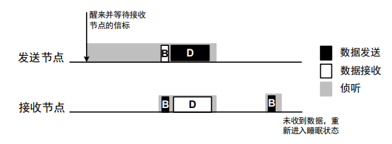 -
数据冲突问题:
- 冲突避免
- 二进制指数退避
3.3 链路质量估计¶
-
链路质量的评估指标
- 物理层指标
- 接收信号强度RSSI
- 信噪比SNR
- 链路质量指示LQI
- 链路层指标
- 数据包接收率PRR
- 物理层指标
-
RSSI 与PRR之间的关系
- 当RSSI>-87dBm时, PRR>85%, 链路质量好
- 当RSSI<-92dBm时, PRR<50%, 链路质量差
- 当RSSI低于-87dBm时，进入灰色区域，PRR非常不稳定，难以预测
- RSSI问题
- 灰色区域测不准
- 和接收器灵敏度有关
-
SNR (Signal to Noise Ratio)
- 信号功率与噪声功率的比率, 单位dB
- SNR=10log(S/N), S为信号功率，N为噪声功率
-
LQI (Link Quality Indicator)
- 计算方法
- 帧定界符（SFD）之后8个symbol的码元错误率(CER)
- LQI=(CORR-a)*b
CORR为数据包SFD后8个symbol的平均correlation value，在0~255之间，a 和 b 为经验参数
- LQI经验值：50(最差)~110(最好)
- 在CTP中，认为LQI高于105的链路为高质量链路
- 计算方法
-
PRR (Packet Reception Ratio)
- 数据包成功接收率 （不考虑重传）
- 衡量链路质量的最终指标
- PRR估计方法：一段时间内，成功接收的包数与发送的总数的比率
3.4 6LoWPAN¶
-
两种主要技术
- 分段重组
- 头部压缩
-
分段重组
- Size: 每一个分段的大小(bytes)，所有分段中都包含
- Tag: 属于同一个IPv6报文的，Tag相同
- Offset: 表示在原来IPv6报文中的位置，用于重组 在第一个分段中省略，其它分段需要包含该字段
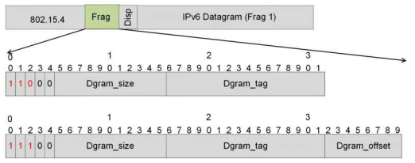
-
IPv6头部（40B）压缩:
IPv6数据报头部40B，UDP头部8B- 源节点与目的节点的IPv6 地址（共32B）压缩非常关键
- 基本思想：利用链路层地址与IPv6 地址之间的直接映射关系
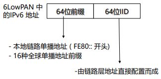
3.5 CTP&RPL¶
CTP¶
- 多对一的路由模式
- 基于距离向量路由协议, 选择距离最短的路径
- 建立在CSMA MAC或LPL MAC，及链路质量估计器上
-
路由指标：ETX(expected number of transmissions)
- 链路ETX：在一条链路上成功发送一个数据包所需的传输次数
- ETXf = 1 / (df X dr) ≈ 1/df
- df: 数据包成功到达接收者的概率
- dr : 接收者回复的ACK包成功到达发送者的概率
- 路径ETX：在一条路径上成功发送一个数据包所需的传输次数
- 链路ETX：在一条链路上成功发送一个数据包所需的传输次数
-
CTP 路由帧(beacon)格式
- P: 路由信息请求标志位。置位, 则收到该包的节点将发送路由帧更新路由信息
- C: 拥塞标志位。置位，表示上一个CTP包丢失，发生拥塞
- Parent: beacon发送节点的parent
- ETX: 发送节点的path ETX
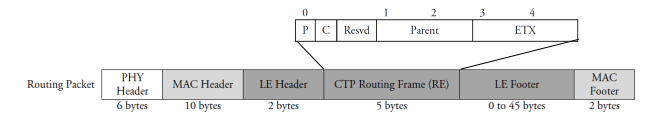
CTP路由回路问题
- 发生原因：路由信息陈旧, 没有及时更新
- 如何发现
- 数据包中的节点ETX应该逐跳减小
- 当节点收到的数据包ETX比自己的ETX低时, 说明发生回路
- 两种解决机制
- 通过广播beacon包来解决不一致性
- 当数据包ETX高于设定的阈值时，不再发送该数据包
RPL¶
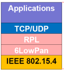
3.6 Thread¶
THREAD 针对IEEE 802.15.4设备设计的IPv6网络协议栈
- THREAD网络协议使用IEEE 802.15.4通信标准无线网络技术，支持低功耗和网络自组织等特性，能够为物联网设备提供可靠的、安全 的、可扩展的通信连接。
- THREAD网络中的节点可分为两种角色：路由节点（router）和端 节点（end device）
3.7 Matter¶
Matter 一个统一的、基于ip的应用层连接协议
Matter协议是一个高层协议(应用层协议)，工作在OSI七层模型的传输层以上，依
赖IPv6协议。
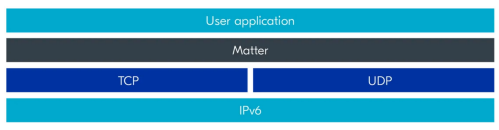
组网模式¶
- 单一网络拓扑
- 星形网络拓扑
4.蓝牙低功耗协议（BLE）¶
BLE的协议栈
- 低功耗物理层
- 40个跳频信道：37个数据传输信道，3个广播信道
- 低功耗链路层
- 周期性醒睡
- L2CAP
- 数据包融合/分割
- 控制数据包重传
- GATT，ATT
- 服务交换的数据结构
- SMP
- 密钥生成与分发 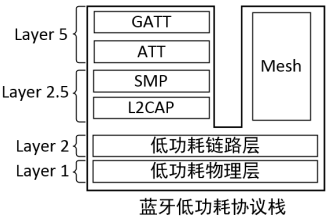
4.1 物理层协议¶
- 信道分配
- 从2.4GHz到2.480GHz，
- 每个信道2MHz，总共40个信道（0~39）
- 37,38,39为广播信道，其他为数据传输信道
-
为了减少数据传输阶段的干扰，使用跳频技术
- 基础信道的跳频
- 每一对master和slave以同一种伪随机序列的方式切换信道
- 下一次跳频的信道由gMap、c和hop决定
- 自适应跳频
- master和slave会维护一系列的信道质量数组ChM
- gMap根据ChM对每个信道的标记情况进行可用信道的更新
- 基础信道的跳频
-
物理帧结构：
- preamble: 0,1交替，首位bit和Access Address的首位bit相同 10101010 ，8位(1Mbps模式)
- Access Address (AA)
- 广播包：固定的值0x8E89BED6
- 数据包：在建立连接过程中确定，每一对链路唯一的AA
- PDU
- 广播包：最多37字节，最少6字节
- 数据包：最多257字节，最少2字节
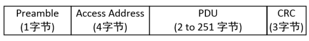
4.2 链路层协议¶
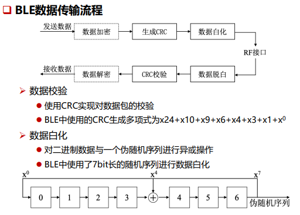
-
BLE链路层状态机
- 扫描状态:对广播信道37，38，39轮流扫描
- 准备状态：可以向其他状态切换的中间状态
- 广播状态：纯广播或者可以被连接
- 初始化状态：监听指定的device信道，等待发送连接反馈
- 连接状态：从广播状态或者初始化状态通过发送连接广播包CONNECT_REQ切换。
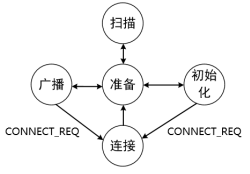
-
广播包帧结构
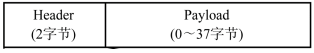 -
连接请求广播包结构(CONNECT_REQ)
连接建立过程
- Master发起连接请求
- 等待1.25ms+winoffset时间间隔（BLE处理多个连接的schedule时间）
- Master发送数据包，slave成功反馈，则连接成功，且连接事件间隔确认
- 连接失败
- slave没有在winsize时间内收到master数据包，失败
- master没有在timeout时间内收到salve反馈，失败
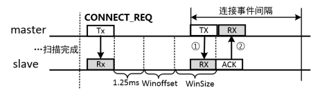
-
数据包帧结构
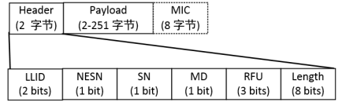 -
数据包传输:7.5ms 到 4s之间, 1.25ms的倍数
- Master发起每次通信事件，slave反馈
- 即使没有实际数据发送，也会周期性发送/反馈空数据包
- Slave可以设定latency，表示经过多少连接事件再反馈（节约能量）
- Slave在一个连接事件间隔中，可以连续发送多个数据包
- 通信完成，立刻进入休眠
- Master发起每次通信事件，slave反馈
-
BLE的邻居发现:
- 在BLE设备建立连接组成piconet星型网络之前，BLE设备需要首先扫描周围的设备以发现潜在的可连接设备
- 设备A在扫描信道38的时候，发现了设备B，向设备B发送了扫描反馈数据包。其后，设备A和设备B即可进入连接建立过程
4.3 L2CAP协议¶
-
数据包的分割和重组
- L2CAP帧格式
- Length: 数据帧长度
- Channel ID: 用于唯一表示当前通信链路的标识
- L2CAP SDU length: 传输数据帧总长度（子数据帧重组后的长度）。
- 每个子数据帧最大251字节。 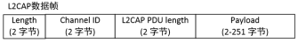
-
差错控制和重传
4.4 ATT属性检索协议和GATT通用属性框架¶
ATT(Attribute Protocol)：提供对服务的检索功能
GATT(Generic Attribute Profile)：定义了服务存储的数据结构
每个特征的句柄是唯一确定的，用于区分不同的特征和服务
4.5 BLE mesh¶
-
组网：四种链路类型
- ADV(Not Relayed)：非转发节点的广播包收发
- ADV(Low power)：用于低功耗节点与朋友节点之间收发数据包，
- ADV Bearer：两个节点之间可以基于mesh协议收发广播消息，并且可以作为中继转发；
- GATT Bearer：用于没有mesh能力的传统节点也能参与MESH网络
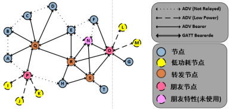
4.6 蓝牙 5.x规范¶
针对BLE，蓝牙 5.0相比于4.2版本有三点重大更新
- 2M PHY
- BLE远距离编码信道
- 扩展广播
- 室内定位辅助功能